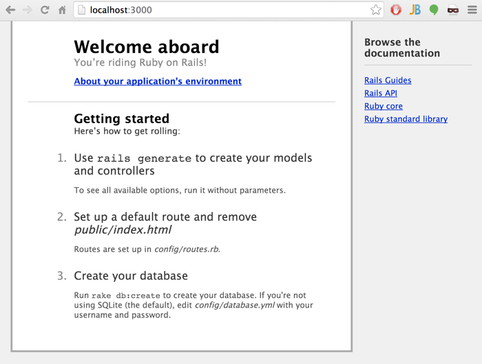

Using Rails
Rails is...
Setup
The Ruby and Rails communities have a collection of tools to manage their environments. While not strictly necessary
to set up a working Rails development environment, let's start things properly.
- Install RVM
- Install Ruby
- Install Rails
- Install PostgreSQL
- NOTE: Mention something about Bundler and the Gemfile
Creating a Rails Application
> rails new rails-test-project --database=postgresql
create
create README.rdoc
create Rakefile
create config.ru
create .gitignore
create Gemfile
create app
create app/assets/images/rails.png
...and so on. Once complete, we see that the rails new command created all of this:

We need to add a database user for our new Rails application to our Postgres database:
> psql -d postgres
psql (9.3.2)
Type "help" for help.
postgres=# create role rails_test_project login createdb;
CREATE ROLE
postgres=# \q
We now have a working skeleton of a Rails application, which we can test:
> rails server
Booting WEBrick
=> Rails 3.2.14 application starting in development on http://0.0.0.0:3000
=> Call with -d to detach
=> Ctrl-C to shutdown server
[2014-02-18 04:11:24] INFO WEBrick 1.3.1
[2014-02-18 04:11:24] INFO ruby 1.9.3 (2013-02-22) [x86_64-darwin12.3.0]
[2014-02-18 04:11:24] INFO WEBrick::HTTPServer#start: pid=3376 port=3000

The Design of Rails
A few core principles underlie the design of Rails:
- Convention over configuration
- MVC
- ...???...
Action Controller and Action View
Rails provides additional tools for creating views and controllers corresponding to user actions. For example,
if we wanted to enable users to either eat bacon or eat lutefisk, we could create an "Eat" controller with
corresponding bacon and lutefisk methods
> rails generate controller Eat bacon lutefisk
create app/controllers/eat_controller.rb
route get "eat/lutefisk"
route get "eat/bacon"
invoke erb
create app/views/eat
create app/views/eat/bacon.html.erb
create app/views/eat/lutefisk.html.erb
invoke test_unit
create test/functional/eat_controller_test.rb
invoke helper
create app/helpers/eat_helper.rb
invoke test_unit
create test/unit/helpers/eat_helper_test.rb
invoke assets
invoke coffee
create app/assets/javascripts/eat.js.coffee
invoke scss
create app/assets/stylesheets/eat.css.scss
rails-test-project/app/controllers/EatController.rb
class EatController < ApplicationController
def bacon
end
def lutefisk
end
end
rails-test-project/app/controllers/ApplicationController.rb
class ApplicationController < ActionController::Base
protect_from_forgery
end
For a good explanation of protect_from_forgery, read http://railskey.wordpress.com/2012/07/02/rails-protect_from_forgery/
Active Record
schema.rb gets automagically generated by...
Making Database Changes
Rails Plugins
Common Libraries
There exists an endless selection of libraries, but some are worth calling out in particular:
- Factory Girl
- Coffeescript
- Rabl